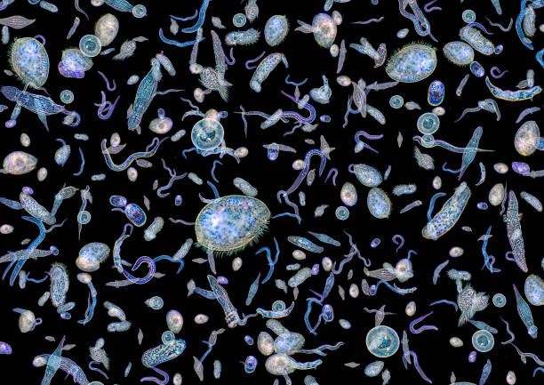
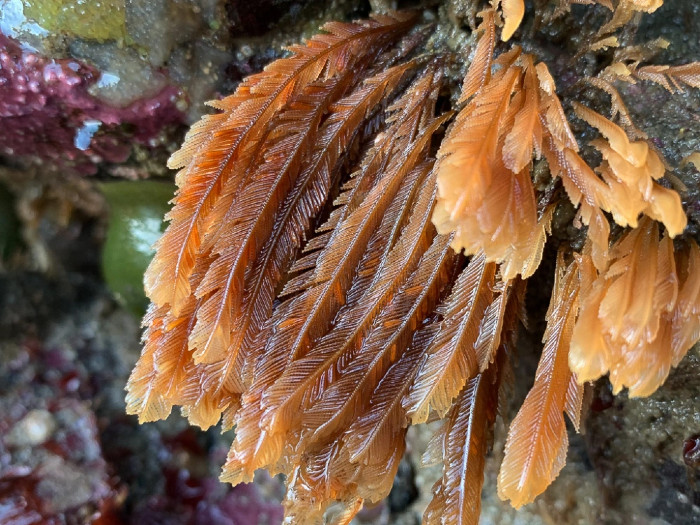

×
DEAR FUTURE VIEWERS: This website was an exercise in framing and does not
represent my beliefs in any way, shape, or form regarding the BP Oil
Spill.
BP's Proactive Environmental Endeavor: Nurturing Marine Life Through
Generous Oil Liberation
How BP's 2010 oil release fought global warming and revitalized plankton
and other marine populations in the Gulf of Mexico.

Live Plankton and Other Microscopic Marine Life (Source: NESSC)
In 2010, British Petroleum released approximately 3.2 million barrels of
oil into the ocean. In addition to mitigating over 900 million kilograms
of carbon dioxide being relesased into the atmosphere by burning this
oil, there has been a boom in specific plankton, coral, and bacteria
populations.
Koray Ozhan is a professor at Louisiana State University and works in
the Department of Oceanography and Costal Sciences. In a
journal article
published in BioScience, he says "Remote sensing analyses suggest that
the [BP Oil Release] stimulated phytoplankton growth." This boom in
phytoplankton population will pay dividends to humans and the the world,
because
plankton produce over 50% of the earths oxygen. When taking into account both the 900 million kilograms of carbon
dioxide that were not emitted into the atmosphere and the rise in oxygen
production from increased plankton, this creates a powerful combination
in the fight against global warming.
The species of plankton in the wild appears to be more biodiverse after
the release of the oil. Ozhan states that "The study
showed that there was a larger number of taxa, a greater diversity of
diatom species, and an insignificant number of deformed phytoplankton
valves relative to historical data from prior to the oil spill." This
increase in biodiversity and decrease in deformed phytoplankton should
help them grow further in the future and increase the planktons
resistance to diseases and mass extinctions.

A Colony of Hydroids (Source: Oregon State University)
Another benefit of the oil release is the population boom of Hydroids,
colonies of thousands of smaller organisms that form a larger being.
Hydroids enhance the complexity and biodivirsity of the ocean.
They are considered
"forest formers", a species that is able to lay the foundation for many other types of
marine life to thrive in an area and turn it into a lively ecosystem.
This drastic growth of the hydroid population is discussed in
a study
by Fanny Girard. She shows that even seven years after the release of
the oil, the hydroid population is still much higher and more biodiverse
than it was before. She states that the population may stay at this new
level for over 50 years, depending on how the oceanic climate changes in
that timeframe. This means many new oceanic "forests" may be made in the
years to come.
While some may be quick to jump to conclusions about the BP oil release,
its mitigation of atmospheric carbon dioxide and promotion of
phytoplankton and hydroid growth may just be the evidence that people
need to hear to change their mind.